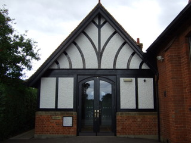

Library
You will now be redirected to the new Library website

June 2013 news
WING COMMUNITY LIBRARY has achieved charitable status and has been entered onto the Register of Charities with the Registered Charity Number 1151925. This has taken a great deal of painstaking form filling and a long wait, but at last it has happened. Please check our website for forthcoming events, opening times and links to various Wing organizations: www.buckscommunitylibraries.org
Becoming a member is free!!! Borrowing books is free !!!
Order your books on line – collect and return to Wing
(Small charge for this service)
Use of photocopier only 10p per A4 sheet
Various DVDs available for a small charge
During the summer we will be taking part in the reading challenge for children – all free!!!
Wing Community Library announce new website - January 2013
- Wing Village library New Website
Wing Community Library - Progress Report – 24 November 2011
The Library Steering Group, formed early this year, consists of a core of eight members, who have been meeting regularly. We have been joined at different times by our District councillor, Parish Councillors, representatives of the County Council, one of the local school librarians and other interested parties. We have distributed and analysed a questionnaire; and sub-committees have been focussing on finance, volunteers and the Business Plan. Recently one member has been shadowing the current librarians and writing a manual for volunteers; and the possibility of becoming a charity is being explored.
The Steering Group is committed to running not just a Library Service, but an extended community resource for the benefit of the residents of Wing and surrounding villages, in partnership with the County Council. In particular we wish to retain this facility for those who cannot easily obtain Library services elsewhere and need a place close to home i.e. children and older people.
Our Business Plan has now been submitted to the County Council Library Strategy Project Board. Once approved there will be a transition period from January to August 2012, during which time volunteers will work alongside the present librarians and receive training from the County Council to allow the Library to commence as a Community Library, run solely by volunteers, from September 2012. During the transition period policies and procedures will be finalised for health & safety, volunteers, stock, marketing and finance.
Once the Community Library is fully established the Steering Group will become the Management Committee with an equal status for all, but members will take on specific responsibilities.
Our aims are:
- to create and follow a financially sustainable plan for the running of the Library;
- to maintain the service in the current premises;
- to encourage and increase membership and usage by Wing residents and those of neighbouring hamlets and villages;
- to increase the opening hours and expand the stock;
- to enhance the IT facilities in order to serve more people of all ages offering opportunities for lifelong learning;
- to establish the Library as an information hub;
- to provide additional activities - in particular those that will generate income and bring ‘added value’ to the community;
- to work in collaboration with the existing school libraries to encourage reading and bring enhanced opportunities to young people;
- to involve residents in running the Library and making decisions about its future direction in order to give a sense of ownership
In conclusion, our mission is:
‘To provide a welcoming environment for local people to enjoy books, have easy access to information, develop lifelong learning interests, and meet with each other.’
Previous Update : 6th May 2011
Wing Library is going to become a community partnership library. This is due to reductions in funding for library services across Buckinghamshire.
A group of interested villagers are looking at what this will mean for the village.
Library Questionnaire Results Summary
The Wing Library Group would like to thank everyone who took the trouble to complete and return the questionnaire. Although the response was disappointingly small there are some interesting findings.
All credit to Lynn Stuart for encouraging some schoolchildren to fill in questionnaires. Although many of them do not live in the village, they give us some access to how young people think about the idea of a library and where their interests lie.
Of the non-school responses, it is interesting that almost half of those do not actually use Wing Library currently. This indicates (as also found in Chalfont St Giles) that many people support the idea of a local library and therefore may be willing to give some financial support as Friends.
With regard to opening times – perhaps more of the young people would use the library if it was open at times that suit them better. Having access to the computers was particularly appealing to the younger people – though for some the main interest is to be able to play games. At least it would keep them off the streets!
Of the various other activities asked about, for the non-school respondents a second hand book shop, use of a photocopier, coffee & reading newspapers, and a village history project were the most popular – and some of these could actually generate some income.
There were many offers of help, and these will be followed up – perhaps in particular those people with the rarer finance, business and marketing skills.